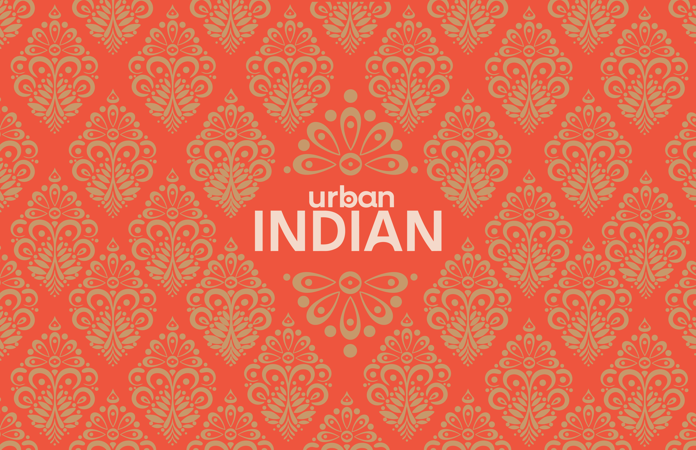
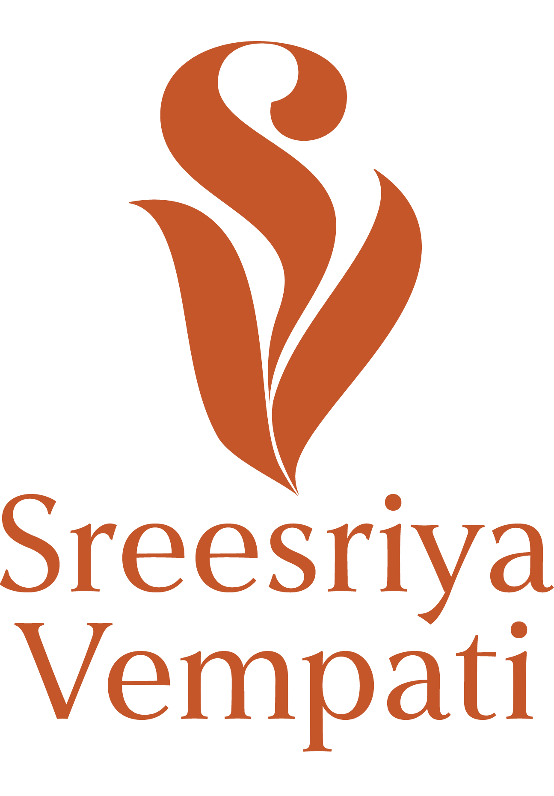
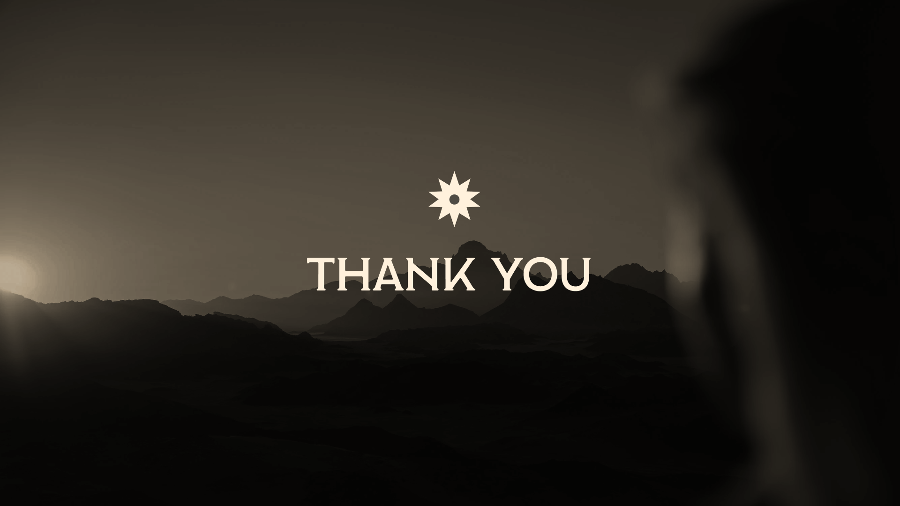
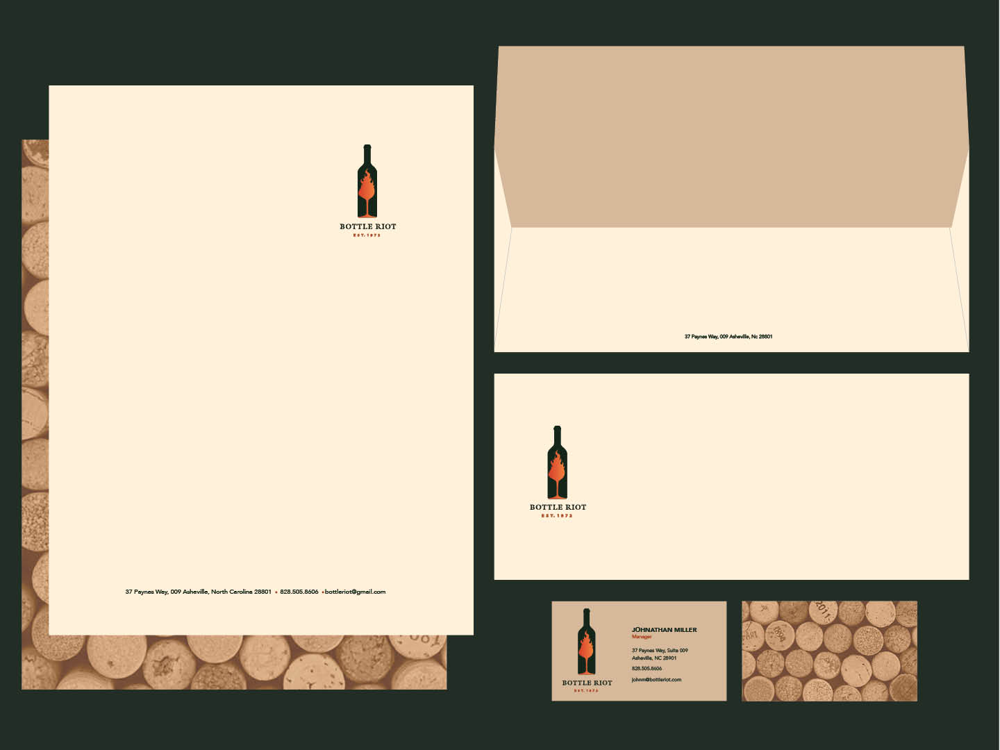
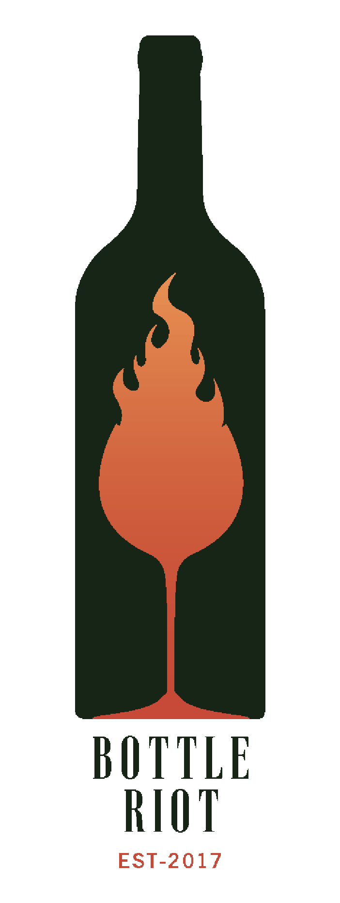
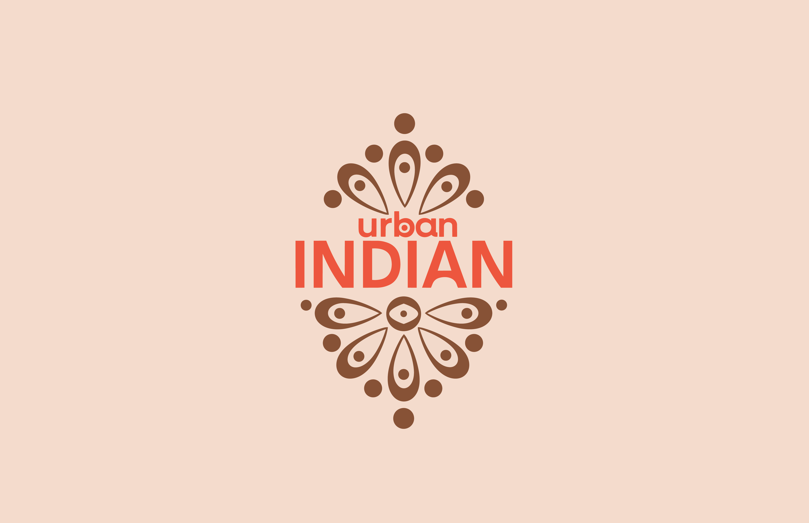
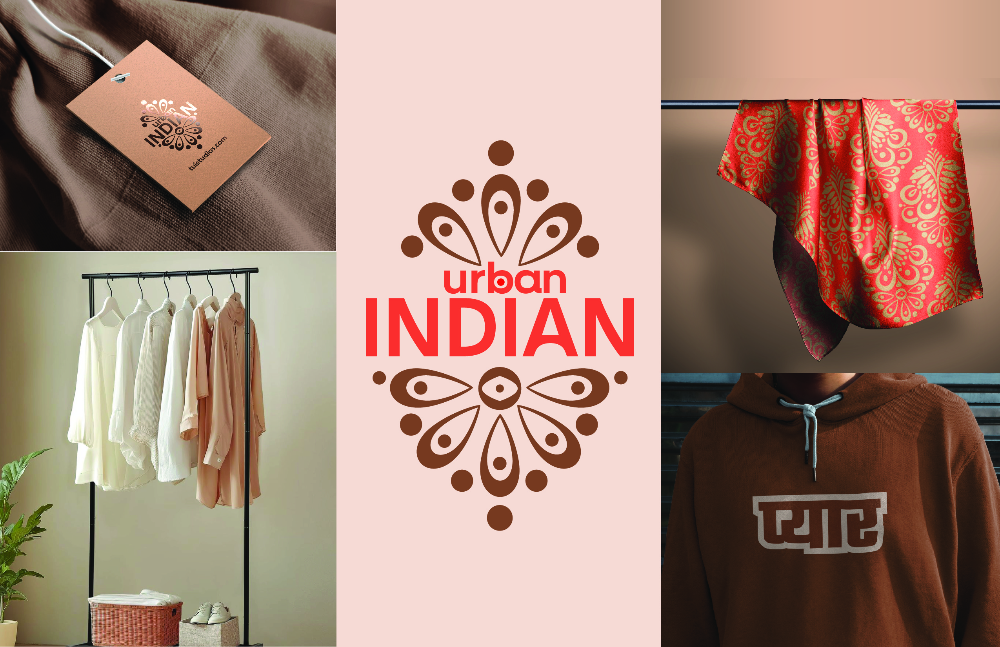
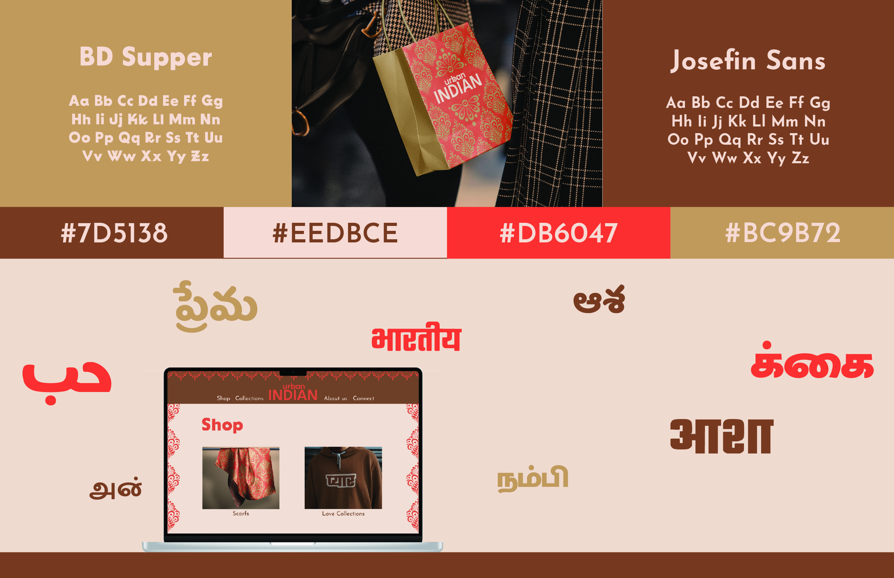
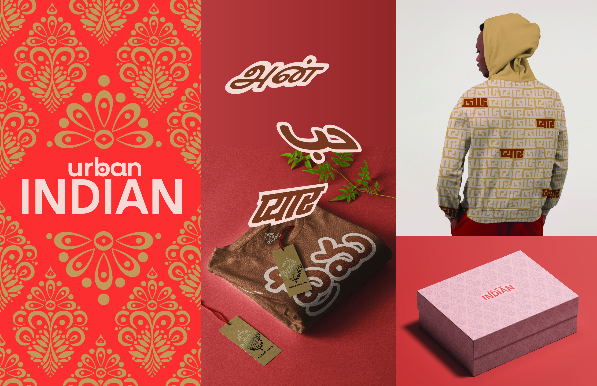

01
Selected Work


Graphis 2023
Honorable Mention



Design Portfolio · 2025
UX Designer & Visual Artist crafting experiences at the intersection of culture, craft, and clarity.


Designer & Visual Artist
I'm Sriya—a designer who balances function with visual impact. I work across UX, branding, and visual communication to create work that is culturally resonant and visually bold.
Based in the US · Currently pursuing design studies · Passionate about the intersection of cultural heritage and contemporary visual language.
Let's make
something together.
User Experience · 2025
Website Redesign — UX/UI
Project Outline
The Goldfield Ghost Town redesign was a focused effort to modernize the site's digital presence while preserving the town's historic character. The brief prioritized three outcomes: make trip-planning fast and intuitive, strengthen the site's visual identity so it reads like a destination, and deliver a responsive, accessible experience for visitors on mobile and desktop.
Research & Discovery
The discovery phase established problems to solve and opportunities to amplify. We performed a content and IA audit, identifying duplicated pages, missing hierarchies, and unclear navigation. We then conducted a card-sorting exercise with potential users from diverse backgrounds—revealing that Camp Ground, Attractions, and Group Activities were naturally grouped together. A competitive Brand Matrix gave us context about Goldfield's position in the activity-center space.


Design System
The visual system leans on an earthy palette, layered textures, and type choices that nod to vintage Western signage—applied with modern typographic hierarchy and generous spacing. Component work included a responsive hero module with strong CTAs, an events calendar that prioritizes upcoming dates, modular attraction pages, and a compact ticketing summary that reduces friction.



Graphic Design · Brand Identity · 2025
Honorable Mention — Graphis 2023


Project Outline
A complete rebrand of Bottle Riot, a bar and wine shop in Asheville known for its eclectic character and vibrant community. The challenge was to create a visual system that communicated the brand's rebellious, creative spirit while feeling refined enough to represent its curated wine selection and lively social atmosphere.
Research
The research phase began with an audit of existing brand assets. I studied the local market and other independent wine bars, focusing on how design signals atmosphere, price point, and community values. Bottle Riot occupied a gap: many competitors leaned too polished or too casual, leaving space for a brand that could be bold and rebellious while still maintaining sophistication.
Design Direction
Mood boards explored bright, contrasting color palettes conveying energy and type treatments combining boldness with legibility. Logo explorations played with layered typography, sharp edges, and dynamic arrangements. Supporting brand elements evoked the raw energy of a gathering space celebrating individuality and community.


Graphic Design · Brand Identity · 2025
Full Brand Identity System

Project Outline
A full brand identity redesign for The Urban Indian, a contemporary fashion label blending traditional Indian aesthetics with modern streetwear. The goal was to design a brand system that celebrated cultural heritage while feeling bold, versatile, and relevant to a global urban audience. Deliverables included three brand boards with at least seven applications of the branding.
Research & Discovery
The research began with an audit of fashion and lifestyle brands that fuse culture with modernity. I studied Indian textiles, block-printing motifs, and multilingual typographic traditions. From this, I defined three key design principles: Cultural authenticity, Modern accessibility, and Scalable adaptability.



Animation · Print · 2025
Poster & Animation
Project Outline
The goal of this project was to create a risograph poster and animation while working within a set of predetermined constraints. A key requirement was limiting the design to only two colors selected from an eight-color risograph palette. Inspired by the 7th rule from Corita Kent's Ten Rules, the project explores the idea that consistent effort and repetition eventually lead to meaningful outcomes.
Design Direction
The final design uses simple circular forms that gradually gather and organize into a unified composition. This progression acts as a visual representation of Corita Kent's message, showing how small actions accumulate into something larger over time. The limited two-color palette became an integral part of the design, creating strong visual cohesion while highlighting the layered textures and imperfections characteristic of risograph printing.
Process
This project introduced me to several new Photoshop techniques and workflows. The animation was first created in Adobe After Effects, where I developed the movement and timing of the circular forms. Individual frames were then arranged in Photoshop and separated into two color channels to prepare them for risograph printing. Through this process, I learned how digital motion design can be translated into a physical print medium while maintaining consistency across both formats.
 Corita's 10 Rules →
Corita's 10 Rules →
Editorial · 2022
Editorial Publication
Project Outline
This editorial project is a visual artist feature focused on Jiayue Yu, a multidisciplinary artist working across photography, 3D rendering, and video. It is a three spread magazine feature. We are challenged to create something beyond our previous design skill.
Research
Research began with studying Jiayue Yu's projects, artist statements, and published interviews to understand her core themes: fatigue, desire, uncertainty, and how they appear in everyday urban and social spaces. Her work often blends constructed imagery with real environments, creating a tension between reality and simulation. I analyzed her series-based structure (such as In Retrospect and Worn Out Joy) to understand how she builds narrative across bodies of work. This informed the editorial pacing—alternating between dense written sections and full-bleed imagery to reflect her layered, reflective approach. Sketches and layout tests focused on hierarchy, readability, and rhythm between image and text. I explored how spacing and repetition could mirror her conceptual focus on repetition, memory, and emotional residue.
Design Direction
The design is minimal and editorial, using black text with blue accents for quotes and highlights. The title page features her name repeated in a soft blue gradient to reflect themes of repetition and memory. The layout is split between text and imagery, allowing her work to remain central while supporting context stays clean and structured.


Brand Identity · 2025
Brand Identity System

Project Goals
The goal of Vibe Lab's brand identity was to create a visual and emotional system that supports emerging creatives. The intention was to design something that feels like a calm, supportive entry point into the design world. The brand needed to communicate encouragement and softness while still feeling credible enough to host resources such as job opportunities, references, and design insights. Another major goal was to build a system that could scale across editorial content in the form of newsletters, social media posts and magazines.
Research
The research focused on how creative communities and design-focused social spaces currently operate, and where they often create pressure instead of support. Many existing platforms rely on highly polished, dense, or trend-driven visuals that can unintentionally reinforce comparison and burnout. This led to reframing Vibe Lab as more of an emotional and creative environment rather than a traditional brand system. Inspiration was pulled from editorial design, zines, and collage-based layouts, where layering, imperfection, and variation create warmth and authenticity while still maintaining a sense of structure.
Design Direction
The final design direction is built around a flexible collage system that prioritizes variation within consistency. Instead of fixed templates, layouts adapt depending on content, while cohesion is maintained through recurring visual elements like a pastel palette derived from the logo and soft paper textures that add tactility and warmth. Typography is intentionally restrained to support clarity and emotional ease, allowing composition and imagery to lead. The overall system reflects the core idea of Vibe Lab: creativity is fluid, personal, and evolving, and the identity should feel the same way.
First Instagram Post: